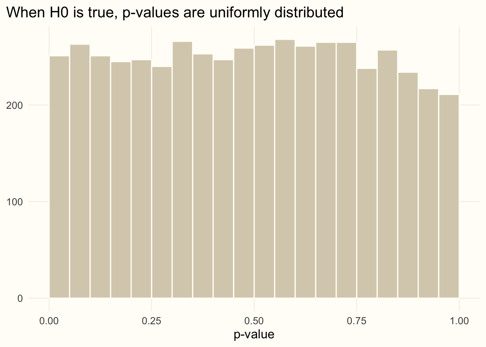
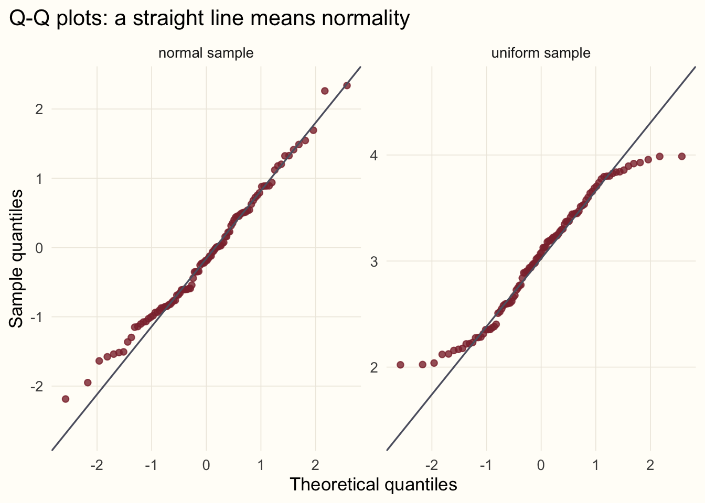

library(ggplot2)
# A shared look for the figures in this series
accent <- "#8c2f39"; gold <- "#b08d4a"; ink <- "#5d6070"
theme_set(
theme_minimal(base_size = 13) +
theme(plot.background = element_rect(fill = "#FFFDF8", colour = NA),
panel.grid.minor = element_blank(),
panel.grid.major = element_line(colour = "#EEEAE0", linewidth = 0.3),
plot.title.position = "plot")
)Statistics from the beginning: hypotheses, normality and one-sample tests
statistics
R
teaching
series
Third in a series on statistical tests: the logic of hypothesis testing, what a p-value is, how to check normality, and the t-test and Wilcoxon test for a single sample.
Series · Statistics from the beginning · Part 3
NoteAbout this series
This series is adapted from my 2017 lecture notes, Introduction to Statistical Tests (original PDF). Part 1 covered location and spread, Part 2 covariance and correlation. From here on we move to tests, beginning with the simplest situation: a single sample.
A test is a question put to the data
So far we have described data. A statistical test lets us decide something about the population behind a sample. Suppose the breed standard says that mature ewes of our breed weigh 55 kg on average. We weigh 30 ewes from our flock, and their mean is about 56.7 kg. Is the flock really heavier than the standard, or is that extra 1.7 kg just the luck of the draw?
The procedure always has the same shape:
- State a null hypothesis, \(H_0\): the boring explanation, here “the flock’s true mean weight is 55 kg”. The alternative, \(H_1\), is that it is not.
- Compute a test statistic from the sample, a number that is large when the data sit far from what \(H_0\) predicts.
- Ask how often a statistic at least this extreme would turn up if \(H_0\) were true. That probability is the p-value.
- If the p-value is below a threshold chosen in advance, the significance level \(\alpha\) (conventionally 0.05), we reject \(H_0\). Otherwise we do not.
Two cautions about wording. First, the p-value is not the probability that \(H_0\) is true. It is the probability of data this extreme given that \(H_0\) is true. Second, failing to reject \(H_0\) is not proof that \(H_0\) holds. It means the data did not give us enough reason to doubt it.
Two kinds of mistake
A test can go wrong in two ways. Rejecting a true \(H_0\) is a Type I error, and its probability is exactly \(\alpha\). Failing to reject a false \(H_0\) is a Type II error, with probability \(\beta\). The quantity \(1 - \beta\) is the power of the test: the chance of noticing a real effect.
We can see the first kind directly by simulation. We draw many samples from a population where \(H_0\) is true (mean exactly 55 kg), test each one, and look at the p-values:
set.seed(3)
p_null <- replicate(5000, t.test(rnorm(30, mean = 55, sd = 4), mu = 55)$p.value)
mean(p_null < 0.05)[1] 0.0502ggplot(data.frame(p = p_null), aes(p)) +
geom_histogram(breaks = seq(0, 1, 0.05), fill = "#d8cfba", colour = "#FFFDF8") +
labs(x = "p-value", y = NULL,
title = "When H0 is true, p-values are uniformly distributed")
About 5% of the tests reject \(H_0\) even though it is true, which is what \(\alpha = 0.05\) promises. This is also why a single “significant” result should not be over-interpreted: run twenty tests on pure noise and one of them will come out significant on average.
Parametric or non-parametric?
Tests fall into two families:
- parametric tests assume that the data come from a distribution described by a few parameters, most often the normal distribution;
- non-parametric tests make no such assumption, typically working with the ranks of the observations instead of the values.
One may ask: why not use non-parametric tests all the time? Because when the parametric assumptions do hold, the parametric test has higher power. The sensible workflow is to check the assumptions first and choose the test accordingly.
Checking normality
The most common assumption to check is that the sample comes from a normal distribution. There are two complementary ways to do it: a formal test and a picture.
The Shapiro–Wilk test has \(H_0\): the sample comes from a normal distribution. Let us try it on a sample that is normal and on one that is uniform:
set.seed(11)
normal_sample <- rnorm(100, mean = 0, sd = 1)
uniform_sample <- runif(100, min = 2, max = 4)
shapiro.test(normal_sample)
Shapiro-Wilk normality test
data: normal_sample
W = 0.98751, p-value = 0.473shapiro.test(uniform_sample)
Shapiro-Wilk normality test
data: uniform_sample
W = 0.9583, p-value = 0.003048For the normal sample the p-value is large, so we have no reason to reject normality. For the uniform sample it is small, and we reject. The quantile–quantile (Q–Q) plot shows how a sample departs from normality: it plots the sample’s quantiles against those of a normal distribution, so a normal sample falls along a straight line.
qq <- rbind(data.frame(sample = "normal sample", x = normal_sample),
data.frame(sample = "uniform sample", x = uniform_sample))
ggplot(qq, aes(sample = x)) +
stat_qq(colour = accent, alpha = 0.8) +
stat_qq_line(colour = ink) +
facet_wrap(~ sample, scales = "free_y") +
labs(x = "Theoretical quantiles", y = "Sample quantiles",
title = "Q-Q plots: a straight line means normality")
A word of caution. A formal test is sensitive to sample size: with thousands of observations it flags departures that are harmless, and with a dozen it can miss serious ones. Treat Shapiro–Wilk and the Q–Q plot together, and think about whether the departure matters for the test you intend to run.
One-sample t-test
Back to our flock. We weigh 30 ewes and ask whether their population mean differs from the breed standard of 55 kg:
set.seed(2026)
flock <- rnorm(30, mean = 57, sd = 4)
shapiro.test(flock)$p.value # normality looks fine[1] 0.3245917t.test(flock, mu = 55)
One Sample t-test
data: flock
t = 2.1376, df = 29, p-value = 0.04111
alternative hypothesis: true mean is not equal to 55
95 percent confidence interval:
55.07387 58.34670
sample estimates:
mean of x
56.71029 The output has several parts. The test statistic is
\[ t = \frac{\bar{x} - \mu_0}{s / \sqrt{n}}, \]
the distance between the sample mean and the hypothesised mean \(\mu_0\), measured in units of the standard error. We can check it by hand:
t_stat <- (mean(flock) - 55) / (sd(flock) / sqrt(length(flock)))
t_stat[1] 2.1375582 * pt(-abs(t_stat), df = length(flock) - 1) # two-sided p-value[1] 0.04111133With a p-value just below 0.05 we reject \(H_0\) at \(\alpha = 0.05\), but only narrowly: a borderline result like this deserves a second look rather than a celebration. The p-value is the probability of a \(t\) at least this far from zero in either direction under \(H_0\), using the \(t\) distribution with \(n - 1\) degrees of freedom. The output also gives a 95% confidence interval for the population mean. If we repeated the experiment many times, about 95% of such intervals would contain the true mean. Note that it does not contain 55 whenever the test rejects at \(\alpha = 0.05\): the interval and the test tell the same story.
TipA brewery statistic
The \(t\) distribution and the \(t\)-test were introduced by William Sealy Gosset, who worked for the Guinness brewery and used them to monitor the quality of stout. Because the brewery did not allow employees to publish under their own names, he wrote as “Student”, hence Student’s t-test.
When the standard deviation is known: the z-test
If the population standard deviation \(\sigma\) is known in advance, we can replace \(s\) by \(\sigma\) and use the normal distribution instead of \(t\). This is the z-test:
sigma <- 4 # known population sd
z <- (mean(flock) - 55) / (sigma / sqrt(length(flock)))
c(z = z, p = 2 * pnorm(-abs(z))) z p
2.34190706 0.01918549 mean(flock) + c(-1, 1) * qnorm(0.975) * sigma / sqrt(length(flock)) # 95% CI[1] 55.27893 58.14164The z-test gives a smaller p-value here because it ignores the extra uncertainty that comes from estimating the standard deviation from only 30 animals: the \(t\) distribution has heavier tails to account for it. In practice \(\sigma\) is almost never known, which is why the \(t\)-test is the one you will use. With large samples the two give almost identical answers.
One-sample Wilcoxon test
What if the data are clearly not normal? The non-parametric counterpart of the one-sample \(t\)-test is the Wilcoxon signed-rank test. It ranks the absolute differences from the hypothesised centre and asks whether positive and negative differences are balanced. It assumes the distribution is symmetric but not that it is normal. Our uniform sample from before qualifies:
t.test(uniform_sample, mu = 3)$p.value[1] 0.5275405wilcox.test(uniform_sample, mu = 3)
Wilcoxon signed rank test with continuity correction
data: uniform_sample
V = 2719, p-value = 0.5058
alternative hypothesis: true location is not equal to 3The population this sample came from is uniform between 2 and 4, so its true centre is 3, and neither test finds reason to reject \(H_0\). When the data really are normal the \(t\)-test is a little more powerful. When they are not, the Wilcoxon test is the safer choice.
What’s next
We have the logic of testing and the tools for one sample. In the next part we move to two samples: are two groups drawn from the same population? We will meet the F-test for variances, the \(t\)-test in its Welch form, and the Mann–Whitney (Wilcoxon rank-sum) test.
Previous: covariance and correlation. Next in the series: two-sample tests.